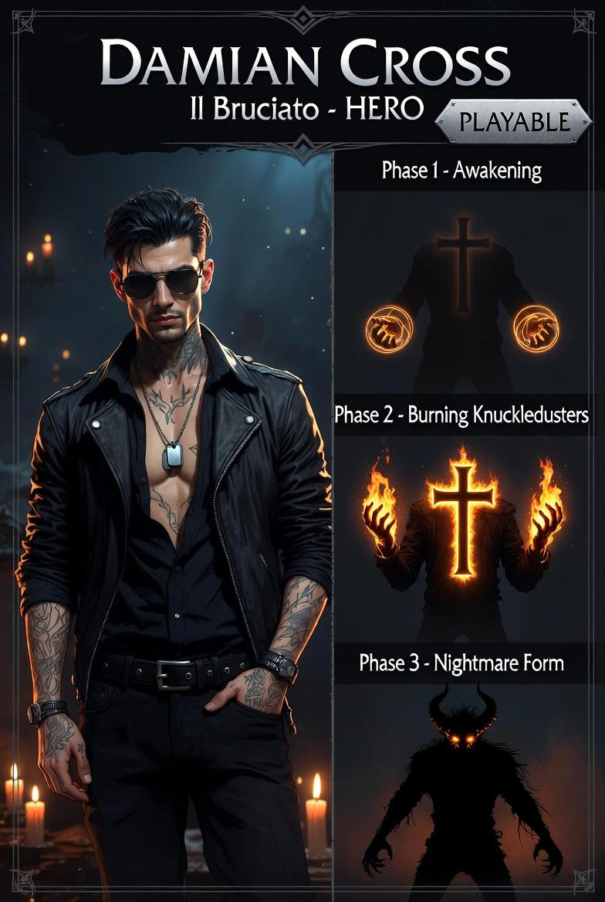

Cambion — ibrido umano / demone incubo
Giocare Damian è scommettere su quanto lontano si vuole spingere,
sapendo esattamente qual è il prezzo. E scegliere comunque.
| Corruzione | Fase triggherata |
|---|---|
| > 25 | Fase 1 — Risveglio |
| > 55 | Fase 2 — Demone Minore |
| > 80 | Fase 3 — Demone Incubo |
| Fase | Drain / s | Note |
|---|---|---|
| Base (0) | 0 | Nessun drain |
| Risveglio (1) | 2 / s | |
| Demone Minore (2) | 5 / s | |
| Demone Incubo (3) | 12 / s | |
| Berserk (4) | 12 / s | Riserva < 10 in Fase 3 |
| Traumatico (5) | −3 / s | Rigenera lentamente. Fasi sbloccate a riserva ≥ 30 |
| Fase | Trigger | Colore | Velocità | Effetti |
|---|---|---|---|---|
| Base | Inizio | #222233 | 200 px/s | Nessuno |
| Risveglio | Corruzione >25 o F | #886600 | 200 px/s | +30% danni LMB |
| Demone Minore | Corruzione >55 o F | #440066 | 240 px/s (+20%) | Shadow attivo, danno ridotto 25%, push su LMB |
| Demone Incubo | Corruzione >80 o F | #880022 | 200 px/s | ×5 forza, lifesteal +10 riserva/kill, shadow attacca ogni 2s, SPACE disabilitata |
| Berserk | Riserva <10 in Fase 3 | #ff0000 | 200 px/s | Attacchi deviati ±30°, shadow colpisce bersagli casuali |
| Traumatico | Riserva = 0 in Fase 3+ | #555566 | 100 px/s (×0.5) | Nessuna fase, riserva rigenera 3/s, overlay lampeggiante |
| Fase | Danno | Effetto extra | Cooldown |
|---|---|---|---|
| Base | 15 | — | 350 ms |
| Risveglio | 20 | — | |
| Demone Minore | 22 | Push nemico (+20px in direzione facing) | |
| Demone Incubo | 75 | Lifesteal: kill → +10 riserva | |
| Berserk | 75 | Direzione deviata ±30° random | |
| Traumatico | 15 | — |
| Fase | Abilità | Danno / Effetto | Cooldown |
|---|---|---|---|
| Base | — | Nessun effetto | — |
| Risveglio | Colpo pesante | 30 dmg | 1500 ms |
| Demone Minore | Shadow Parry | Assorbe il prossimo colpo (finestra 3 s) | 1500 ms |
| Demone Incubo | Shadow Lash | 40 dmg — proiettile verso cursore, vel 450 px/s, durata 1200 ms | 1500 ms |
| Berserk | Shadow Lash | 40 dmg — direzione casuale | 1500 ms |
| Traumatico | — | Nessun effetto | — |
| Parametro | Valore |
|---|---|
| Dimensione | 18×26 |
| Colore / Alpha | #220033 — α 0.5 |
| Lag follow (Fase 2) | Interpolazione 0.08 per frame |
| Auto-attacco (Fase 3) | 20 dmg — ogni 2000 ms — raggio ricerca 80 px |
| Berserk | Bersaglio casuale invece del più vicino |
| Indicatore | Posizione | Colore |
|---|---|---|
| Corruzione | 6×6 a (x−5, y−20) | #444444 (0%) → #ff2200 (100%) |
| Riserva | 6×6 a (x+5, y−20) | #6600aa (piena) → #110022 (vuota) — lampeggia <20% |
| Overlay Traumatico | 22×30 centrato su Damian | Bianco α 0.25 — lampeggia lentamente |
Support attivabile — sfondamento offensivo
| Funzione | Dettaglio |
|---|---|
| Attivazione | Chiamato da Aetherion — entra già in Fase 2 o 3 |
| Azione principale | Eliminazione di gruppi di nemici ad alta densità |
| Natura | Presenza devastante — non chirurgica come Silas, non posizionale come Mira |
| L'ombra (Fase 3) | Attacca da sola — Damian non controlla il campo, lo svuota |
| Costo | Recupero dopo l'intervento — stato traumatico, non disponibile immediatamente |
| Rischio | In Fase 3 può colpire chiunque — gestione timing critica |
| Campo | Valore |
|---|---|
| File principale | src/characters/Damian.js |
| Logica pura | src/characters/DamianPhase.js |
| Test | tests/characters/DamianPhase.test.js — 31 test |
| Visuale placeholder | Rectangle 20×28 — colore dinamico per fase |
| Stato | ✓ implementato |